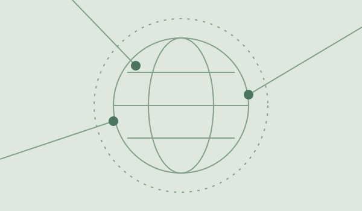

What does it take to rebuild American industrial capacity?
A potential examination of factory productivity, skills, investment, capital equipment, and the institutional conditions needed to sustain domestic manufacturing.
Writing / Independent Research
My writing explores the systems and decisions shaping industry, technological change, strategic competition, and the renewal of American productive capacity.
This is my independent writing portfolio. Items below are research in progress or proposed subjects, not published essays.
Research in progress
An evidence-first investigation into international crop threats, detection systems, and consequences for agricultural and economic resilience.
Read the research outline ↗
Articles under consideration
A potential examination of factory productivity, skills, investment, capital equipment, and the institutional conditions needed to sustain domestic manufacturing.
Potential lessons about manufacturability, engineering change, supply readiness, and production-system maturity, developed from public and independently created materials.
Evaluating the technical, financial, and organizational constraints that determine whether automation improves an operation.